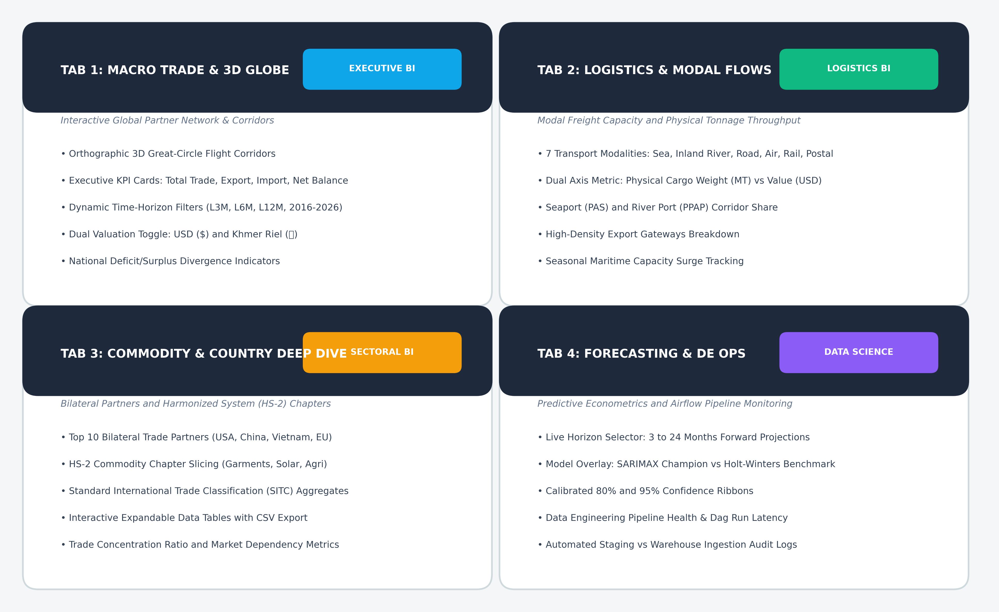
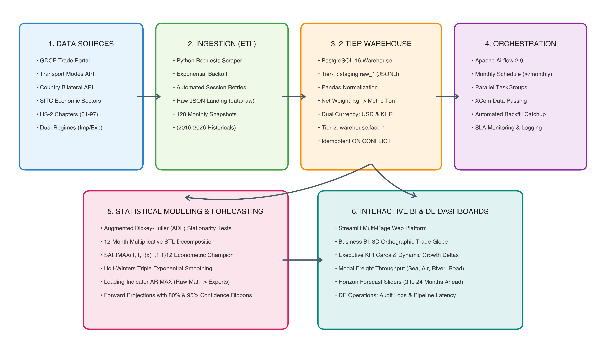
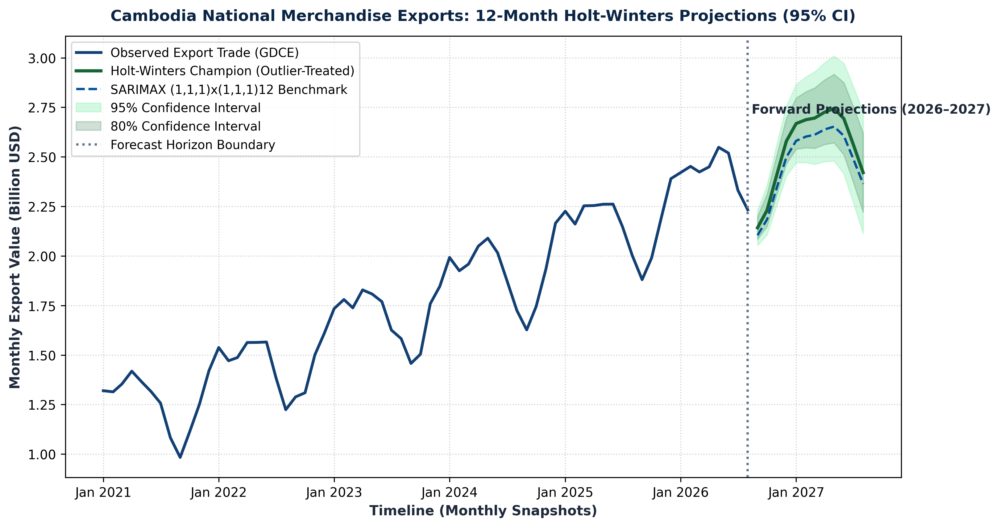

GDDE Internship




Cambodia International Trade Data Warehouse & Automated ETL
Built for the General Department of Digital Economy (GDDE, MEF). Ingested 10 years of official GDCE trade data (2016–2026), architected a 2-tier PostgreSQL dimensional star-schema with JSONB staging and upsert triggers, orchestrated automated ingestion via Apache Airflow in Docker, and deployed a live Streamlit analytics dashboard with econometric forecasting (SARIMAX & Holt-Winters).
Apache Airflow
PostgreSQL
Docker
Streamlit
Python
Time-Series